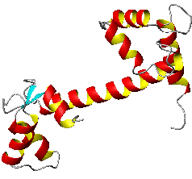
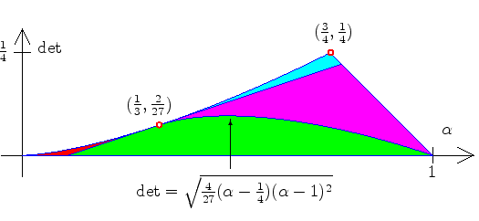

Convex Hulls of Orbits and Orientations of a Moving Protein DomainMarco Longinetti, Luca Sgheri, and Frank Sottile. |
||||
| We study the facial structure and Carathéodory number of the convex hull of an orbit of the group of rotations in R3 acting on the space of pairs of anisotropic symmetric 3\times 3 tensors. This is motivated by the problem of determining the structure of some proteins in aqueous solution. | ||||
|
Two pictures from the paper | ||||
|
 Calmodulin |
 Image of a map of invariants |
|||